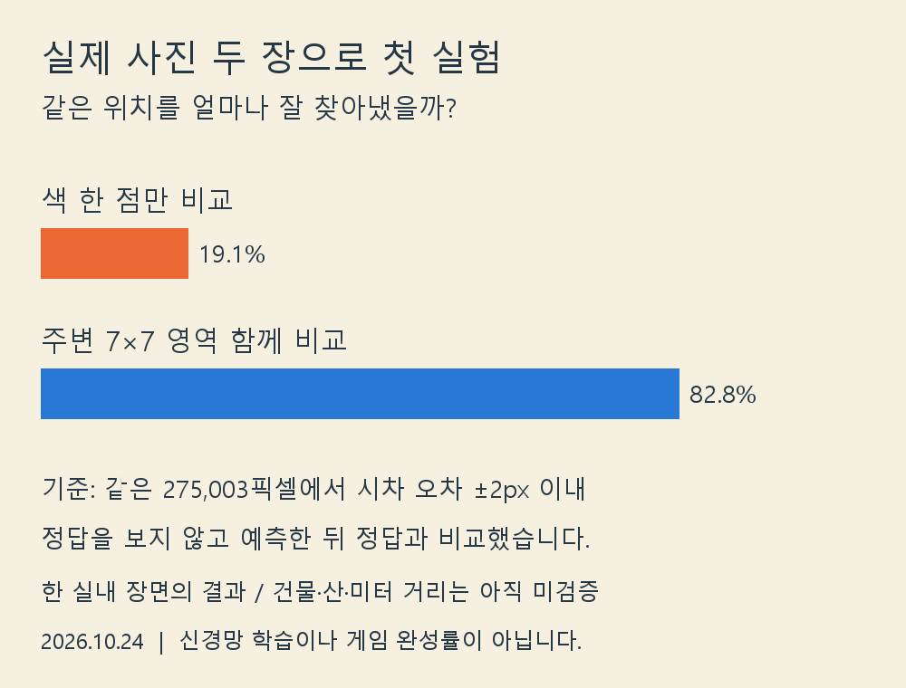

실제 사진 대응 실험
정답을 입력으로 주지 않고 실제 좌우 사진에서 대응을 계산했습니다.

고정 시차 범위0–112px, 641×555 반해상도, 같은275,003개 픽셀 평가입니다. 단일 픽셀 SAD와7×7 SAD의 비교이며 평균 절대 시차 오차는20.61→4.59px, 중앙값14.5→0.5px입니다. 임계값2px는 원본 해상도의4px에 해당합니다.
정답0과 공통 경계를 제외했으며 별도 가림 정답 마스크는 사용하지 않았습니다. 이 결과는 한 실내 식물 장면의 비교이며 학습된 지능, 도시 일반화, 미터 거리 복원을 의미하지 않습니다. 다음은 좌우 왕복 일치 검사와 보정된 도시 쌍 검증입니다.
자료: OpenCV 공식 Aloe 샘플. 원본 사진은 외부 게시하지 않고 집계 그래프만 게시했습니다.